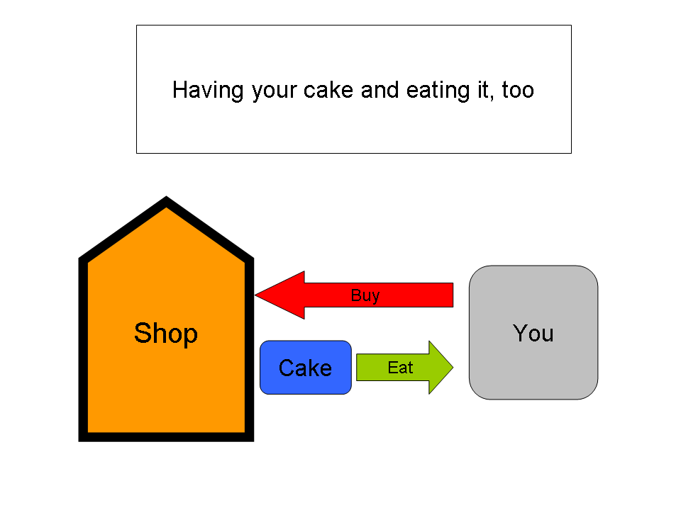
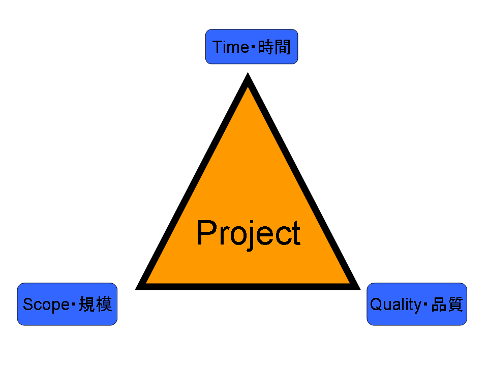

This is the first post of a multi-part series on Language and Society (yes, I was deliberately looking for the dryest, most lifeless-sounding topic title ever 😀 ).
The largest problem that would-be language learners have faced, especially with Asian languages (though not exclusively so) has been simple lack of confidence. A lot of the writing you’ve seen on this site has been of the kind usually associated with personal development.
Why? Because that’s what people needed. People needed to believe in themselves, people needed to know that their age, ethnicity and “lack of discipline” [whatever the heck that means] were not an issue. People needed to turn their self-fulfilling prophecies upside down.
During all this, one “problem” I thought I had was lack of credibility. No one seemed to take what I was saying seriously. It was either fluff, or a prank, or outright chicanery. By “no one”, I really mean “some people who I gave more attention than they deserved”. Anyway…
Now, though, more often than not, the problem is reversed. People think too much of me. The Japanese companies I consulted for asked if I could interpret Korean for them (What? No!). People ask if they can interview me for books (What? Why?). And worst of all, people ask me how they can learn 500 (OK, 500 is exaggerating. Usually, it’s just like a trillion) languages at once.
And by people, I generally mean college students, usually engineers, who are somehow forgetting that engineering is all about intelligent compromises, and are trying to be all things to all people.
Seriously, I get emails like this:
[Fictional quote based on two actual emails. These are real “requirements”]“I am going to China for study abroad, but my girlfriend is Japanese, and I want to be able to function at native-level Chinese while in China for the next 2 years, but then also be perfect in Japanese before I meet my girlfriend’s parents; I might also want to get a job in Japan, so I need to have great technical writing, did I mention that…
I know you’ve talked about focus and the 80-20 rule, but I don’t really think that applies here, because I HAVE to know Chinese and Japanese perfectly right now today in order to get the scholarship also my dad runs a theater company and I need to interpret for him in Japanese 10 days from now, so I need your advice on how to get my skills up really fast”
So, how do you learn a billion languages at once? REALLY FAR KING FAST?!
The short answer is: I. Have. No. Freaking. Idea. So. Don’t. Ask Me.
The medium-length answer is: if you’re at the level where you need to be asking me advice on the issue, then, Houston we have a problem.
And the long answer is: What gave you the impression that I knew how do this? All I’ve written about is complete saturation in a single language. If I knew how to learn a kajillion languages at once, then why would I even have bothered exile English from my life? Wouldn’t I have just relegated Japanese to some magically productive 20-minute-per-day timeslot, and then suddenly woken up one morning fluent?
I don’t want to deny the possibility of learning several languages at the same time. That would be wrong of me. I am open to the idea. I simply have no clue how one could go about it.
Let me repeat: I am open to the possibility of learning several languages at the same time. When you find out how to do it, I mean really native-level do it, please put out a book or website or movie that gives all the details. Because I’ll be all over it.
Let me reiterate: I want to know how to know all the languages in the world, too.
But if you’re coming to this website and asking me how to do it, then you are demonstrating a fatal lack of knowledge, initiative and English reading comprehension. Because at no point have I actively advertised, advocated or even encouraged learning multiple languages at the same time.
The language-laddering thing seems like an exception, but the laddering is really about how to keep your L2, while also doing your best to get at an L3, but with the full awareness that this is being done to the detriment of the L3 (if continued past when you could go monolingual, such as how I continue to ladder Japanese through Chinese even though monolingual Chinese dictionaries would be more convenient and effective).
The whole using a random, unfamiliar language as a break thing is even more clear-cut: it is simply a tool to keep your L2 by removing any excuse to make contact with your L1, because we all know that your L1 is a habit that has a very powerful “gravitational pull”, and once you get too close to it, getting away again may require a lot of force.
Anyway, at its core, all this “how do I learn tons of languages at the same time” advice-asking, demonstrates a clear inability to do that most important of things, namely: make real decisions.
In both Sino-Japanese and Latin, the word “decide” literally means to “cut off” (決斷・裁斷). The “de” is a prefix that indicates removal — out of, away from. The “cide” part is the “cut off”. It’s the same “cide” as in “homicide”, “infanticide”, “patricide”, and “West Cide”.

Every decision, even a good decision, necessarily involves loss. If you give up smoking, you gain clean lungs, but you lose, well, smoking. If you give up drinking, you gain a clear mind, but you lose, well, excuses for fondling young men and women who are neither interested nor willing.
Now, this doesn’t mean you can’t make win-win decisions. I make these all the time, and I love them. It doesn’t mean you can’t have your cake and eat it too — pretty much anyone who’s ever bought cake has had their cake and eaten it too.
It just means that we’re going to have to be a little more creative than asking people who don’t know. A key attribute of good decision-making is asking advice from people who are actually somehow in a position to give you good advice. I am not such a person.
Perhaps decisions in language-learning are a matter of that time-scope-quality (TSQ) triangle at work. In commercial software engineering projects, the customer gets to control two of the “corners” that represent universal project attributes, but the software maker must be allowed control of the third.
So, if you have ten days (time), to learn perfect-sounding Japanese (quality), then be prepared for a smaller range (scope). Similarly, if you want perfect Japanese (quality) with massive range (scope), then be prepared to relax on the time-to-completion aspect. Finally, if you want massive range (scope) in a short time, then be prepared to forfeit any guarantee of quality (most short-term language-learning tools and methods seem to cluster around short-time, wide-scope, low-quality). Anyway…
A lot of the people trying to learn a bunch of languages at the same time are doing so for economic reasons. This is stupid. Look at the current Forbes billionaire list. You will be hard-pressed to find polyglots there. Does this mean we should give up on all languages and focus only on English? No. There are Mexicans, Indians, Germans, Swedes, Japanese, Saudis, Chileans and Italians on this list. Most of these people are monoglots — diglots at best. But I can assure you that all these people either have very large vocabularies, or are related to someone who did. Unlike, say, authors and professors, they may not be engaged in the business of directly demonstrating their large vocabularies, but trust me (actually, don’t trust me — I’m just repeating the results of the work of a guy called Johnson O’Connor — trust him), they have them and they use them. The Forbes list might as well be a list of well-read, clear, eloquent communicators and their close relatives [not that they’re quite on the list, but, for example, President Bush the Elder was well-spoken enough that he could compensate for Bush the Younger’s…rusticness].
Some people may say “oh, but that’s the Forbes list; it’s a small sample, therefore it’s irrelevant”. I say, it’s precisely because it’s the Forbes list that it’s relevant. That’s like saying “short people can’t play basketball, and can’t dunk, and don’t bring up Spudd Webb OR Mugsy Bogues OR Allen Iverson, because that they’re irrelevant”. No, it is because Spudd Webb, a short man (5’7″) by any standard, not only participated in, but won the NBA dunking competition, that any petty excuses about height and basketball ability are just that — petty, petty, excuses. If Spud Webb were not a highly successful player in the best basketball league in the world, then his case would be far less meaningful. Similarly, if we’re going to talk about economic success, then anything we say would be meaningless if it didn’t reflect itself on something like the Forbes list, the high-score table of the economic video game.
The NBA and the Forbes List are odd things. The world seems to have very unproductive, mixed feelings about these rankings of the most successful people in a particular game. Put simply, there is some admiration, but it is mixed with a poisonous envy of “lucky” [as if all they had been doing was tweaking their MySpace and having endless petty arguments online, when suddenly…] people, and a drive to dismiss them as “irrelevant” to “real” life.
For whatever reason, people want these things kept at arm’s length. I say, don’t avert your eyes from the best in any particular game. Don’t try to make excuses for why you’re not on any particular high-score list (yet 🙂 ). Don’t treat amazing things as if they’re happening in another galaxy where you have no place and to which you have no right — everything in the world is happening on this same little, watery rock, populated by other humans who are nothing but your cousins, slightly removed.
Instead, try to emulate — copy the good. Try to find how you, too, can join the best. It doesn’t help to deny that something matters to you if it clearly does matter to you. Dishonest dismissal will get us nowhere. You don’t need to let go of jealousy because it’s “morally right”; let go of jealousy because it’s simply more productive, effective and fun when you do.
Anyhoo, let me get to the point: A single language learned really, really well (i.e. huge vocabulary) is infinitely more powerful than a plurality of languages learned badly. All the meaningful economic indicators appear to demonstrate this. High-quality, wide scope, for all available free time. That means serious fun-having. I am not stating this as a rock-solid fact; I have no rock-solid facts for you; it’s just a pattern.
Back to the Forbes list. Microsoft, Oracle and IKEA do business in dozens of countries and territories. Does Bill Gates know Japanese? No. Do all Microsoft Japan employees know English? No. Does at least Steve Ballmer or Paul Allen know, I dunno, at least Mandarin? Again, no. Larry Ellison has that Japanese house, but does he know Spanish? No. J.K. Rowling isn’t even on the list, but surely she knows some Japanese since her books sell so well in Ja…No. Does Angela Merkel speak French since she has such an important role in Eur…No.
Is there a handful of Microsoft employees who know every single language in which Microsoft does business? You wish. Multinational organizations, like clothes, are bound together only two pieces at a time. Bilinguals are the human joints that span the world, not polyglots.
So, for economic purposes, with a language, the key is: Depth over breadth. Depth before breadth. Depth defeats breadth. Depth. Depth. Depth.
What if you’re just learning a zillion languages for fun? Go for it! By all means. Screw around. But screwing around means stop getting worked up and sending frantic emails for advice on how you can become a one-man United Nations, capable of massive ownage at all times in all things in all places with all people in all languages.
And who knows? If you stop having panic attacks, stop using so much violent self-coercion, stop inventing painful obligations that don’t really exist, then you might just figure out some cool, fun way to learn a bunch of languages at once. Until then, I eagerly await my free copy of your book. I don’t want to pull you down. I don’t want to tell you that what you want to do is impossible — people told me it was impossible to do what I did. So you go on out there and start baking some humble pie to feed me and the rest of the world when you come prove us wrong!
How Do I Learn 500 Languages At Once?!
You tell me.
Stay tuned for part two, coming two days from now.
I’m finding just learning a second language is taking up enough time as it is!
I’ll admit it. I saw Inglorious Bastards (In English, booo), and when the Nazi Major whipped out English, French, German, and Italian, I started thinking about L3. Not because I admire Nazis*, but because I want to embarrass people who try to pass as Italians by speaking Italian to them and correcting them on their “native” Italian (GRAHT ZEE).
Not that I’d start now. I was thinking five years out. Two at once seems down-right difficult. But hell, a year ago I wouldn’t have bothered learning Japanese, so who knows.
*I do not admire Nazis.
500 languages at once eh? impossible lol. I think everyone wants to learn multiple languages but focusing one each is much better then doing 2 or 3 or 4 at the same time. For me i’ve been doing 4 months of sentences/input and i can already understand alot of Japanese at this stage. Took 2.5 months kanji and rest is sentences. Hopefully after 1 year and maybe abit more i’d want to learn mandarin after this but first things first only Japanese first then another language. I’m lucky i found you’re site other would be stuck in those Japanese level 1 courses,2,3,4,5,6,7. There is actually 7 and you only learn 450 kanji. Right now i know 3007 of them(meanings but i’m at 1200 sentences and counting)
But we need a hero Khatz! Who will we dream about now?
Good post in general, but I’m not sure if your Forbes list example is 100% relevant. Sure, most of the people on there speak 1-2 languages, but is that directly related to their success, or a coincidence? Without doing research, I’m willing to be that most of those billionaires are also predominately male and from 1st world countries. Does that mean you have to be male and/of from a developed country to be rich? Maybe, but examples of female billionaires/billionaires from poor countries do exist.
Being a polyglot may not be necessary for financial success, but I doubt it interferes with your chances either. Provided, of course, that you actually know each language very well, rather than trying bite off more than you can chew.
I’d have to agree with Steve Kaufmann on this issue when he says (as he did in a recent video) about the ployglot Moses McCormick that “it’s more fun to be imperfect in a dozen languages than to strive for perfection in 2 or 3”. I’m not interested in learning any language for economic or job-related reasons (for which depth most certainly wins, no doubt), so I try to collect as many of them as I can.
For me, personally, it’s always breadth over depth, but I don’t deny the rewards that depth can bring. It depends entirely on your goals. There are just too many fascinating languages and cultures out there for me to ever even consider restricting myself to a measly 3 or 4. If that means sacrificing native-like proficiency, so be it, but I suppose it is also possible to know 3 or 4 extremely well and have a rough-and-ready knowledge of a dozen more. Maybe that would be a way of striking a balance between breadth and depth.
There’s a very well known polyglot called Alexander Arguelles who knows an astounding range of languages (see www.foreignlanguageexpertise.com). If you want to see how a person can study many languages in a day, he’s your man:
A Polyglot’s Daily Linguistic Workout: www.youtube.com/watch?v=Oudgdh6tl00
How did being a jack of all trades master of none work out for you?
It wasn’t long ago that I heard of using an L3 to enhance your L2 learning…
But it didn’t involve immersion, it involved book learning. And the L3 wasn’t really to learn the L3, but rather just to give a break from the L2 which actually results in improved study performance of the L2. I haven’t tried it, but it sounds like a solid plan, even if only to eliminate a bit of the ole day-after-day syndrome. You do have to be fairly good at L2 already, though… You can’t start both L2 and L3 on the same day and have it work well. And L3 has to be less well known than L2.
I have to agree with Chris on this one. I think it is a matter of perspective. If one requires the use of an L2, L3, etc. for economical, job, or other practical reasons, depth is likely better than breadth; however, when the object of one’s studies is for purely entertainment reasons (ie. reading certain authors in the original, or reading certain books about your hobbies in their respective languages), then breadth can be more important than depth.
For me, I don’t plan to move outside the US, but I love reading books by some of my predecesors in the martial art of Iaido. All of the great authors were Japanese (being Japanese headmasters of Japanese schools of art, they weren’t too likely to write in English just for me). I also read and speak in Portuguese (the language of my father and his family). I also read in Italian and Latin for the sake of the authors works in those languages.
At least that’s my two yen worth.
I agree with Chris here.
Obviously you need depth in at least 1 language, better if more. However, the more languages you need to maintain depth in, the more time/effort you need to expend on a consistent (daily) basis. So, it would probably be ideal to have depth in 2 or 3 languages, 4 at most, and have quick access (shallow) use of multiple languages that don’t require much maintenance.
The shallow languages can be used for fun, travelling or when you bump into someone who speaks the language, but professionally, the deep languages would be used.
Good post, I think theres definitely a little bit of whats-his-name-500-languages-at-once in all of us (me at least). Right now I’m thinking about SRSing L1 after Japanese.
Also, I’m reading Haruki Murakami in Japanese!
Khatzumoto… even if you don’t speak 1000 languages, you are still my language hero (manhug)
So you really really REALLY don’t know how can I learn 500 languages at the same time?
Just kidding.
@triplej 僕も！ 英語で書かれた村上氏の本より、日本語で書かれた本のほうがいいんじゃない！
しかし、まだ短編小説だけしか読めないんです。というか、小説を読むことが出来るんですが、ちょっと楽しくない。難しすぎるし。お楽しみは大事だろう！
皆、頑張って！
I’ve been known to dabble in multiple languages at once. I, too, think there are too many amazing cultures out there that it would be a shame just to be involved in two or three.
Nevertheless, I have to say that years of jumping from language to language and becoming familar with a wide group of languages have not really gotten me anywhere. Not just economically, but in terms of personal enjoyment.
I have only persevered in one: Mandarin Chinese. First for several months doing my own form of ACATT, and then for several more months once I found this site and realized what it really takes to understand a language and culture. I can say now that nothing compares to fully investing yourself in one language. Although messing around with multiple languages is fun, it’s the same fun as flipping through Facebook for a few hours. Entertaining, but ultimately shallow. Even with a language that I made considerable progress in previously, Spanish, I can’t derive the same cultural understanding and straight-up enjoyment that I can from Chinese.
So, even though it’s kinda cool to be able to read out Cyrillic or kinda understand French Wikipedia articles, I don’t even understand 5% of what Russian and French culture is about, forget trying to read Dostoevsky or Camus in the original.
And if you think about, if you spent the next decade spending 3 years blocks on a different language, you’d know four languages close to native-like in a relatively short time. That sounds pretty good to me, after having wasted close to decade superficially learning several languages.
Sorry to jump on Chris again, but Arguelles is a joke. The 2 minute video he has of himself practicing Mandarin aloud provided a few Chinese people I know with months of entertainment.
“it’s more fun to be imperfect in a dozen languages than to strive for perfection in 2 or 3”
I guess I’ll be the only commenter to disagree with this. It’s far more satisfying to be great at one thing, than mediocre at many.
I think that’s not unrelated to the Forbes list, or even the NBA. How many people on the list do 500 different kinds of anything? To be successful is to be truly great at one or two things.
The only reason that I, personally, would spread myself thin is if I’d given up hope of being great at something. (Or before I found something I really loved doing, and wanted to try everything.) I like being good at things, and that means focusing — being bad at many things is not my idea of fun. 🙂
I disagree with this too, a prefer be able to play skyrim and understand +%90 in a L2, than be able to read a lot of children’s books in a L2,L3,L4,L5…
CE,
You’re most welcome to jump on me. I enjoy disagreements. As to Mr. Arguelles’ Mandarin video he repeatedly states he has not claimed to master Chinese, rather that it is a language he is currently studying (hence his imperfections) and is it using it to demonstrate a study technique which has worked for the many languages he does know well. Sorry, but to make the jump from that to saying he is a joke, is as silly as it is incorrect. If you look at his website, he lists all the languages he has seriously studied and ranks them according to his proficiency in each. That coupled with his years of contributions at the how-to-learn-any-language site make him quite a credible voice on the subject, to my mind at least. Surely you have more to base this on than just that one video? And more to the topic, what are your thoughts on the link to the video I posted?
I don’t really understand how anyone who has actually read through your entire site could think you have the ability to understand their dire multi-language-learning dilemmas, but at the same time, I don’t understand how someone who actually has such a huge dilemma wouldn’t take the time to read the whole site!
The only possible conclusion is that people are lazy and after reading a couple pages (containing both Japanese and Chinese info, not to mention tri-lingual tweets) they decide that you’re probably nice and will do their work for them.
I guess you could make an ACATT site and keep things separate so that idiots would realize you’re only a DEMI-god, but that would probably mean suffering for the smart people (although that often seems the way of the world :S)
btw, you probably COULD successfully publish an AJATT book, and people would like…buy it. Combine the QRG with personal stories and recommendations (ie. copy/paste blog) and you have a winning combo! You could even include a CD with an SRS and Sentence Packs. I would buy the book just for the sake of explaining AJATT to other people (if I have an official book YOU seem like the crazy one, instead of me). Everyone wins!
Chris,
Haha, of course I have more to base my claim that Arguelles is a joke than on that one video, but I think every good discussion begins with a mean-spirited ad hominem attack. 🙂
Unfortunately, YouTube is blocked at the moment in China, so I can’t view the video right now. However, I’ve seen all his videos previously, so unless this is new, I’ve already seen it. I will be back in the States soon, so I’ll check it out then.
I think that most things Arguelles proposes runs against what I believe about second language acquisition and also what Khatz proposes on this site (which, as we know, is Bible Truth). Firstly, he has faith in the second learning materials produced for students. I believe using Assimil, Linguaphone, Berlitz, etc. will not lead one to have a native-like command of a foreign language. Learning vocabulary by memorizing its “equivalent” in your native language and studying grammar rules are a sure-fire way to have a horribly mediocre second language. I think this site has demonstrated quite well that the best (and perhaps only way) to effectively learn a second language is direct engagement with materials produced by natives for natives. Secondly, he also has faith in language classes, which I and many others have observed to be dismal failures. Thirdly, I strongly doubt any of his languages are any good. Even his English is stilted and long-winded. He just strikes me as a person more concerned with his image as a “comparative philologist” than finding ways to truly understand and engage foreign cultures.
If you are looking to admire a foreign language learner out there, I think someone Aleksandar Hemon is someone more appropiate. He shows what one can do if you put your mind to just one language.
Chris said: I’d have to agree with Steve Kaufmann on this issue when he says (as he did in a recent video) about the ployglot Moses McCormick that “it’s more fun to be imperfect in a dozen languages than to strive for perfection in 2 or 3″.
Cool video and cool dudes, but personally, I’ve been inspired by the early success of my Japanese studies to hop back to my L2, refresh (this was a lot easier than thought it would be), and get back in gear with techniques like massive exposure, SRS, etc. The “din in the head” effect is crazy-strong: random words I hear seem to trigger memories of entire songs I listened to all the time years ago, conversations I had, etc. In a way, it feels like I get to rewind the clock with regard to my accent. In other words, I’m having the time of my life. Continuing with kanji for now, and I’ll get back to the language itself in a year or two.
Different strokes…
Thanks for this post Khatz. I’ve been reading your site and actively pursuing Japanese since finding AJATT back in late 2007. I think where people may be misinterpreting the information, and I know I was certainly guilty of this in the beginning too, stems from the fact that you claimed fluency in 18 months. After reading that I remember I was so pumped that I made out a chart of the languages I wanted to learn, giving each a 24-36 month learning time frame. I figured, as I’m sure others do, that if you follow the method then every 2 years or so you can keep adding languages on top of languages and be fluent in all.
Let me state that after 2 years of AMJAP (As Much Japanese As Possible), my initial language chart has been thrown out. After 2 years, I’m nowhere near the native level I thought would be easily attained if I just put in the hours. Sure, I can follow a TV show or simple book without any problems. I would honestly say my Japanese probably ranks close to a 2nd/3rd grade Japanese kid. I’ve still got a long way to go before I’m at the native adult level. I’m happy with what I’ve achieved so far, but I now understand that reaching anything close to a native level will require much more time.
CE,
Sorry, I didn’t catch any ad hominem. And certainly not anything mean-spirited, though if you’re referring to my comment about what you said being “as silly as it is incorrect” (which is all that comes close), then it really did appear that way, as you seemed to be basing your opinion of him entirely on that one video of him speaking Mandarin. Now that you’ve cleared that up and elaborated a bit, I can retract that statement and try to keep the discussion amicable. 🙂 Also, you may very well have seen the video: it’s the last one he made where he is being interviewed to describe his daily study regiment.
To your first two points on the efficacy of textbooks and classrooms, I must say I’ve never heard Alexander Arguelles claim that any textbook or combination of textbooks would lead to native-like proficiency. I mean, who would seriously ever make that claim? He just uses combinations of them as stepping stones toward authentic content like novels. Although I’m not sure I’d personally delve into native content right from day one (very interested and willing to try this nevertheless) I can certainly understand and to a certain extent share your difference of approach. The point to make here, however, is that it’s not as though all his knowledge of all his languages that he claims to speak are exclusively derived from learner dialogues in textbooks and that he concludes his studies of a particular language upon completion of such manuals. He favours them perhaps more strongly than you or even I do, but I’ve never come across anything he’s ever written or said that would give the impression that he regards textbooks like Assimil, Linguaphone etc. as a be-all-end-all solution to acquiring a language. If he did, then yes, that would a REAL joke.
And as to his support of classrooms, he writes:
“Here follow some thoughts on choosing language schools and courses if, despite the consideration that self-instruction is inherently more likely to lead to success, you still feel that you must take classes, either because you need the academic credits or because you know that you lack the discipline to maintain a regular study routine on your own.”
That was just the first paragraph taken from some writings on his site, and I think it’s clear from this alone that he favours self-instruction over a classroom setting.
To your last point on Professor Arguelles’ actual abilities in his languages, for what it’s worth – perhaps not much, since I have no way of proving this – I have spoken with him personally, in German, French and English. While I agree he can at times speak rather tensely and stiltedly in those lecture videos, he is far more casual and at ease in person. I must admit I was quite surprised. His French and German were impeccable, which is not surprising given that they are two of his strongest languages. I know he speaks French actively with his children and also Korean with his wife, so he doesn’t have a merely theoretical hold on all his languages, despite being able to read many more than he actually claims to speak.
Which brings me to a final important point: he learns languages primarily for reading, which probably goes some way to explaining his more traditional approach to learning languages. My reason for posting the link to that video was mainly just to provide an example of someone who studies multiple languages at once – as per the topic of Khatz’ blogpost – and who has found much success in accordance with his own goals. I know it wasn’t quite was Khatz was after, but I still think Professor Arguelles has a lot of knowledge and experience that could be of much use to those who want to learn many languages.
I have no interest in sticking to just one language, but I’ll be sure to check out Aleksandar Hemon. Thanks.
…
And now I sleep.
Learn one at a time, very well, then combine the SRSs together and color code them (red background is German, Green is Chinese, etc.) so when they pop up you’re in the right language mode. Then do your SRS every morning with your coffee to keep the languages up, and go back in to deep-dive on them every so often for a long stretch. I have six languages I’m doing this with, and I hope to add more. At the moment, I’m reviewing my French for four months, and then I’ll switch over to Japanese for several months. Since I have to translate Chinese at work, this means listening to French while doing Chinese, but that’s not really that much different from what Khaz did, going to school in English while listening to Japanese movies in the background.
Someone else I know–a serious polyglot–has a rotation set up to read and listen in his languages one at a time, each every other day. This includes a few he’s still a beginner at. It works for him just fine, but he said the key is discipline. He works on the language on his schedule even for five minutes, rather than doing nothing, if life gets in the way on a certain day.
But both he and I need these languages for our jobs and are willing to suck at some of them for a long time to be good in 5 years. Plus, there are the languages you do just because you love them–I want to get my Irish Gaelic to a good place, but I give my Chinese higher priority because it’s actually useful.
Anyway, clearly the best practice is focusing, giving your mind the time it needs to learn ONE thing at a time, while doing some light maintenance (20-30 min/day) on the other things. The SRS gives us the power to keep the things we’ve learned before in our memories, so we can have the ability to focus on the one language we want to improve in right now.
Also, it’s lets us polyglot geeks go crazy, assuming we give ourself a timespan of years to do it in. Or a lifetime. Considering it was this love of language for language’s sake that got Tolkien writing LOTR (by creating his own language based on others he’d learned), I think we shouldn’t stop learning multiple languages just because it’s stupid and impractical. But Khaz is right: learn them singly and learn them well, and stop once you start questioning why you’re doing it. Since there is probably a much better use of your life out there.
Especially if you ramble incoherently in your native language, like I do. :/ Sorry! Hope you point wasn’t lost in there.
It really depends on what the languages are. If you’re trying to learn Chinese, Russian and Arabic, it’s a lot harder than trying to learn Spanish, Portuguese and Italian or German, Dutch and Swedish. If you’re in the same language families, the more languages you know from the family, the more you come to see the family as a variation on a theme. I study a large number of languages generally on a daily basis. Although, I lapse from time to time depending on how much I have to do and how much free time I have. Currently I’m focusing on: Russian, Chinese, Spanish, French, Italian and German. At one point I was doing all of those plus Persian, Esperanto, Latin and Ukrainian. I did those languages every day for maybe 3 months. Then work got in the way. But, I’m working on figuring out a better schedule. It’s very possible to study this number of languages, you just have to be disciplined and keep up with it.
Hi Khatz,
This is actually one of your best posts ever (minus the middle rambling part :D). The reason is because of several statements at the end:
1a. “A single language learned really, really well (i.e. huge vocabulary) is infinitely more powerful than a plurality of languages learned badly.”
1b. “Bilinguals are the human joints that span the world, not polyglots.”
2. “So, for economic purposes, with a language, the key is: Depth over breadth. Depth before breadth. Depth defeats breadth. Depth. Depth. Depth.”
3. “If you stop having panic attacks, stop using so much violent self-coercion, stop inventing painful obligations that don’t really exist, then you might just figure out some cool, fun way to learn a bunch of languages at once.”
Congratulations on the post. This is really deep thinking, and I hope people realize it.
A
何故コメントの全ては英語で書いてるんでしょうか？
これはAJATTじゃないの？日本語で読みたいです：）
そうじゃないとこのサイトを読んではいけない。
だから、お願いします！
日本語で書ける人はAjattをもう読んでないみたい。もう上達したんだから:D
皆の日本語は下手糞なんだから
MNNはげんきの同様だけど前者より面倒臭く中世っぽい
Interesting post, it’s relevant to me personally since I’ve been failing at learning two languages at once lately. I’m studying Japanese because I want to, but I’m technically supposed to be learning Latin for University. Doing both for the same reason, an interest in Medieval Literature (源氏物語, here I come! Er, might as well be (very) ambitious, right…? Incidentally, it surprises me that Professor Arguelles counts Middle English as one of his languages, as I really don’t consider it significantly different from modern English spelt eccentrically). I don’t know if learning a dead language alongside a living one is a little different, but it still doesn’t seem to work too well – what usually happens is that I do a bit of Latin, and then get fed up and take refuge in Japanese (almost a good thing, but not for my Latin).
At least no one expects me to speak Latin, I guess.
Chris,
I meant that I was the one who made the mean-spirited ad hominem attack by calling Arguelles a joke. You’ve been more than cordial. 🙂
As for Hemon, I didn’t mean sticking to one language for a lifetime, but just devoting a reasonable number of years to one, without jumping around.
Back to Arguelles… I suppose we just have different goals, but I still think that the methods he proposes are both inefficient and, in some cases, counterproductive, even for his/your goals. For example, shadowing leads to bad pronunciation. I think a L2 learner should not be practicing passages aloud like that, because it puts non-native-like input into your brain and reinforces bad habits. You should spend almost all your time listening to natives speak. I also reject the stepping stone theory, because the vocabulary lists and grammar rules in those books and programs, when you get down to it, are just lies. Real language often does not follow the rules set out in those books and two words from two different languages (or in the same language) cannot possibly equal each other. Why spend a significant time studying lies when you can just jump into real language immediately? Khatz has demonstrated how going straight into real content is both fun and effective.
As someone who has been working on multiple languages for several years now, and has learned some frustrating and painful lessons, here’s my advice;
1. Get your first language (whichever that may be – choose arbitrarily if necessary) up to the start of pre-int level first. This means doing one or two basic textbooks, knowing most of the everyday tenses and vocabulary to get you by in basic situations. With real devotion you could do this in about 4-6 months.
2. Once you’ve achieved this, then you can start working on the next language. Try to “interleave” them as much as possible; half hour of L1 in the morning followed by half hour of L2 in the evening is far, far more effective than L1 for a week then L2 for the next week.
3. Continue developing both.
The only obstacle I can foresee on this route is time (realistically 1-2 hours a day at least for maybe a year or two until you can wind down to maintaining each language at a reasonable level). Good luck! がんばってね!
V
A professor from my university once said:
“What’s good in knowing five different languages if you have nothing interesting to say in any of them?”
Like Khatz said, learn one language, but learn it good. And do something relevant with it for crying out loud! 🙂
*agreed* Well put that was.
Japanese is my L3 of choice (and due to my studies at university). Before I started Japanese I was all over English and now I feel confident in using it.
Sometimes the same question creeps up on me, too. May I be able to keep on learning some more English and immerse myself in Japanese at the same time. The answer is very simple. No! I either indulge myself in some nice movie, TV program or book in English or I go with Japanese. Right now my focus clearly is on the latter, but at points I really long to go for some English, as I love the language and still enjoy watching some nice broadcasts like CSI, How I Met Your Mother or just listen to some of my favorite music.
In the end I decided to give me kind of a break from Japanese at times and enjoy, for example, a single episode of my favorite show. This way I keep my touch in English and after the quick interruption I fall back to Japanese and enjoy it even more.
Best regards from Germany
Ionize
Language is something you have to put your time into. If you really are going to learn multiple languages at once you can either simutanously suck at all of them or you can be okay in most of them. Khatz had to put in 10,000 hours of work to pwn really hard in Japanese. That proves you can really in a way spend your whole life in one language and still find new things to learn. Like Khatz said “sucking will stop but learning never will”. It never will there’s too much imformation for one single human being to comprehend.
So for anybody wanting to do multiple languages at once try it. Khatz defied all logic just by doing this and suceeding in it. Do it it’s always nice to prove somebody wrong. 😀
Surely, if a child can be raised natively in three languages, it would be just as possible and in fact easier as an adult to do the same thing? Surely one could simultaneously learn, say, Japanese, Chinese and…I dunno, French? Why just one at a time?
As someone who did learn two languages at once (French, Spanish) I have to say that time’s the only answer. Here in Canada, French Immersion is a class option where all your courses except English Language Arts are in French from Kindergarten through Grade 9, at which point courses are offered in French, yet you only need to take French Language Arts and one additional in French.At the same time, I was learning Spanish (yes, a very similar language) through our school classes and at home.
Note: French Immersion programs kinda suck, though, because the only French you hear except the teacher’s is a fellow intermediate/novice in the lower grades and you’re bound to have several misconceptions about a word’s meaning and grammar when you come out of one of them. One thing that most of my classes didn’t shake till grade 10ish was how you chose “ma/mon”; most of us would transfer our sex upon them!
This is a rather strict filter…. my previously blanked out word was a rather common word that denotes male/female. It does have several crude meanings, but really? How can we talk about languages when there are MANY that conjugate at least verbs using maleness/femaleness
by the inch its a CINCH
by the yard its HARD
by the mile its a TRIAL
“10 days from now, so I need your advice on how to get my skills up really fast”
Don’t tell him about the language brain implant that is in development at Roswell that is top secret stuff.
Learning to understand many languages (at the same time or not) is more realistic. If you don’t speak every language you’ve studied that doesn’t mean you wasted your time. Just being able to understand people can really help you in many situations. And why polyglots don’t get rich? It’s quite simple: they don’t have the time. Language learning is simply too much time consuming.
I completely agree. You’ll find Stu Jay Raj, speaker of up to 14 languages, and reader of up to 17, say something along the lines of: “The difference of each language work off of eachother.”
Dunno if someone haven’t mentioned it already, but this just popped up in my brain:
using ALL foreing languages to learn a new one. Two good thigs it does – reinforcing former languages and widening available resources. So not L1=>L2=>L3=>Ln(Language now learning) but L1+L2+L3=>Ln
Except for the L1 Part. I do not think your L1 will expand after a certain age (Because you know most of it). Only way i think you can expand your L1 is to use L1->L1 dictionary and L1->L2 sentences. Though when you learn new words (atleast for me) a definition is fine and sentences are not necessary (L1->l1 Sentences)
“and L1->L2 sentences”
I meant L1->L1. Oops 😛
I didn’t mean to put L1 in the second example, I was writing in haste and so a mistake occured :/
Oh, and the third good thing it does is making you capable to find a more accurate translation in 3 other languages than in one. You can translate one, say Korean item to Japanese, another to Spanish (e.g. couse it gives a better ‘feeling’ of the word). Plus it urges you to focus (I guess), couse you don’t know what will be another card’s language.
i love this statement
“Bilinguals are the human joints that span the world, not polyglots”
this the best sentence i read in a long time
I study them all at once. The way you do it is make charts comparing all the alphabets, and then get and compile huge polyglot dictionaries while studying one text or conversation at a time in a given language. I have a lot of success, but have been at it now for 10 or so years. I skip from one language to the next every few days, and find ways to keep myself interested.